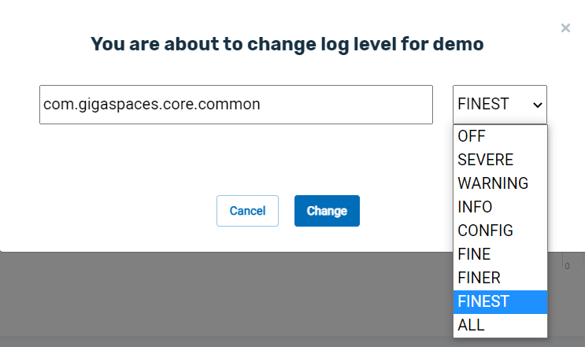

This section explains how to configure the logging for
Some of the features discussed on this page are not part of the open-source edition, and are only available in the licensed editions (starting with
Logging options can be defined during
Two formats are available for the logging files:
Standard GigaSpaces Format
This is a proprietary internal format. It is the default choice for logging files.
CEF – Common Event Format
CEF is a logging format that is provided by ArcSight. In order to configure the system to use CEF format for logs, edit the the xap_logging.properties file in the ...config/log folder as follows:
Locate the line containing com.gigaspaces.logger.GSSimpleFormatter.format = (located near line 70 of the properties file).
Change the line as follows:com.gigaspaces.logger.GSSimpleFormatter.format = {0,date,yyyy-MM-dd HH:mm:ss,SSS} {6} {3} [{4}] - {5}
You may customize the log message as desired. The numbers in braces indicate the placeholders defined in the properties file. For example {3} is the placeholder for the log level.
The logging configuration is initialized using a configuration file that is read at startup. This configuration file is in the standard java.util.Properties format. It configures custom versions of both java.util.logging.Handler and java.util.logging.Formatter, and default levels for frequently used loggers (categories).
The default
The configuration defined in the xap_logging.properties file may be overridden either by using system properties, or by providing an external configuration file with overrides. This external configuration file should be located in the classpath under:
Any configuration that you want to override in the xap_logging.properties file, should appear in xap_logging_ext.properties with its new value. The same applies for system properties, for example:
-Dcom.gigaspaces.exceptions.level=WARNING
The recommended way to define system properties when starting service grid components is to wrap the original script, e.g. gsc.sh(bat) with a wrapper script which include the setenv.sh(bat) script, which is used by these components, will pick these options automatically and use them as JVM arguments.
Your own configuration file may also be used instead of the platform's default. This is done via URL, or by setting the configuration file location using a system property:
-Djava.util.logging.config.file=myfile.properties
setenv.sh(bat) is called from within the platform's scripts, it will pick up the override.
# unix
export If your application initializes the logging facility via the Logging API (e.g. LogManager.readConfiguration(InputStream ins)), you may want to disable the
-Dcom.gs.logging.disabled=true
To troubleshoot and detect which logging properties file was loaded and from where, set the following system property to true. This property already exists in the scripts (for convenience) and by default is set to false.
-Dcom.gs.logging.debug=true
Whenever a service grid component is started, it prints a system report in its log file. Increasing the log level from INFO to CONFIG or beyond will generate a verbose report and include all system properties and environment variables, which can be useful for troubleshooting.
For example, to enable a verbose system report for GSC, change the following log level:
com.gigaspaces.grid.gsc.level = CONFIG
Out of the box,
java.util.logging.ConsoleHandler - A simple handler for writing formatted output to System.err (level is set to ALL).
com.gigaspaces.logger.RollingFileHandler - A handler that writes formatted output to a file that rolls over if a certain policy is triggered. Refer to Managing Log Files.
Java util logging supports other handlers. MemoryHandler, SocketHandler or any other handler can be used instead of the above. For more information about handlers, refer to this Oracle topic on logging. You can also use one of the open source logging frameworks that supports java.util.logging.
Formatters are in charge of formatting the log messages and adding metadata to them (date, time, level, etc).
formatter property with a single Formatter implementation class:
com.gigaspaces.logger.GSSimpleFormatter. This formatter class is based on the java.util.logging.SimpleFormatter class. Refer to Formatting Log Messages for more details.
SEVERE or higher.
com.gigaspaces.exceptions.level = SEVERE
Messages with lower levels will only be logged with the exception's toString() value. To force the logger to print the stack trace of exceptions with lower levels, such as Level WARNING, set the com.gigaspaces.exceptions.level property to WARNING.
The stack trace of a java.lang.RuntimeException is always be logged, regardless of the level definition.
You can change various logger level settings while the system is up and running, without having to restart. This can be very useful in production environments when you have to troubleshoot the system, but cannot restart it.
The logging options can be changed dynamically via one of the following approaches:
Click the card in the Services area of the Services Overview page. On the top right of the screen, click on the three-dot menu. The following popup will appear:
Click Change Log Level, and the following popup will appear:

In this example, com.gigaspaces.core.common is the name of the log file that you wish to change. You can see the list of log files in
The dropdown list allows you to choose a logging level. In this example, the new logging level is FINEST. Click here for information on logging levels.
Command example:
gs logger set-level --service=demo com.gigaspaces.core.common FINE
Description:
For the log file for service demo com.gigaspaces.core.common, set the log level to FINE..
Path
POST/pus/{id}/log-level
Description
Dynamically change the logging level for a log file used by a service.
Example Request
curl -X POST --header 'Accept: application/json' 'http://localhost:8090/v2/pus?id=demo&log=com.gigaspaces.core.common&level=FINEST'
This example changes the logging level for the log file com.gigaspaces.core.common in service demo to FINEST.
Options:
| Option | Description | Sample Data | Required |
|---|---|---|---|
| id | The name of the service that contains the log you are modifying | demo | Yes |
| log | The name of the log file you wish to change — see the list of log files in |
com.gigaspaces.core.common | Yes |
| level | The new logging level. Click here for information on logging levels. | FINEST | Yes |
To do this, connect to the JMX Bean of the Java logging facility via a monitoring tool such as JConsole. You can start JConsole for a specific running GSC or GSM using the <product>\bin\gs-ui.sh(bat)).
To change the logging level in JConsole
Traverse to the MBeans tab.
Expand the java.util.logging tree node and locate the Logging tree node.
Select the Operations tab.
Type the logger's name and level for the arguments of the setLoggerLevel() method. For example, If you want to change com.gigaspaces.exceptions.level level to WARNING, use setLoggerLevel(com.gigaspaces.exceptions, WARNING).
You must use the logging level without the .level string, for example com.gigaspaces.core.cluster.replication, and set the value to FINE.
The LoggingMXBean enables you to:
Get the name of the log level associated with the specified logger.
Get the list of currently registered loggers.
Get the name of the parent for the specified logger.
Set the specified logger to the specified new level.
The logging level class defines a set of standard logging levels that can be used to control logging output. The logging levels are ordered, and are specified by ordered integers/constants.
Enabling logging at a given level also enables logging at all higher levels.
The supported logging levels (in descending order) are:
SEVERE (highest value)
WARNING
INFO
CONFIG
FINE
FINER
FINEST (lowest value)
In addition, there is a level OFF that can be used to turn off logging, and a level ALL that can be used to enable logging of all messages.
The following logging categories are supported:
Client
Communication Protocol
Class Loader
Space (Caching, Query, Replication, etc.)
Runtime (GCC, GSM, etc.)
Security
Web Container
Mule Integration
Management
For each category, there are specific logger names you should use when configuring the logging level. See the xap_logging.properties file for the exact logger names supported for each category. You can also find all logger names in the com.gigaspaces.logger.Constants class.
The following sections describe the different modules, their logging names, and their default logging levels.
com.gigaspaces.client.level = INFO
com.gigaspaces.client.cluster.liveness.level = INFO
The GigaSpaces Client can be another component or application that connects to a GigaSpaces cluster. Liveness check is functionality that runs inside a GigaSpaces proxy (usually held by a client connecting to a Space) to keep track of the cluster members. Additional information about the GigaSpaces proxy can be found here.
The logging configuration file includes declarations of the loggers available at the bridge between .NET and Java.
com.gigaspaces.externaldatasource.dotnet.level = INFO
com.gigaspaces.bridge.dispatcher.level = INFO
com.gigaspaces.bridge.pbsexecuter.level = INFO
com.gigaspaces.dotnet.pu.level = INFO
org.openspaces.level = INFO
OpenSpaces wraps the core product with Spring, which enables applying Spring configuration and the Spring life cycle to
org.openspaces.pu.container.support.level = WARNING
org.openspaces.pu.container.jee.context.ProcessingUnitWebApplicationContext.level = WARNING
GigaSpaces Spring application logging
com.gigaspaces.spring.level = WARNING
org.hibernate.level = WARNING
com.gigaspaces.jms.level = INFO
com.gigaspaces.lrmi.nio.filters.SSLFilterFactory.level = INFO
com.gigaspaces.lrmi.level = INFO
com.gigaspaces.lrmi.stubcache.level = INFO
com.gigaspaces.lrmi.context.level = INFO
com.gigaspaces.lrmi.marshal.level = INFO
com.gigaspaces.lrmi.watchdog.level = INFO
com.gigaspaces.lrmi.classloading.level = INFO
com.gigaspaces.lrmi.slow_consumer.level = INFO
com.gigaspaces.lrmi.exporter.level = INFO
com.gigaspaces.lrmi.communication.transport.level = INFO
com.gigaspaces.lrmi.communication.manager.level = INFO
com.gigaspaces.lrmi.channel.transport.level = INFO
com.gigaspaces.lrmi.channel.manager.level = INFO
com.gigaspaces.lrmi.channel.protocol.level = INFO
com.gigaspaces.core.classloadercleaner.level = INFO
com.gigaspaces.core.classloadercache.level = INFO
com.gigaspaces.core.engine.level = INFO
com.gigaspaces.core.lease.level = INFO
com.gigaspaces.core.types.level = INFO
com.gigaspaces.memory-manager.level = INFO
com.gigaspaces.kernel.level = CONFIG
com.gigaspaces.core.common.level = INFO
com.gigaspaces.core.config.level = CONFIG
com.gigaspaces.container.level = INFO
Core runtime for the GigaSpaces Space component. The above loggers relate to this component and some aspects of this engine, including lease, object types, and Memory Manager.
com.gigaspaces.filters.level = INFO
The Space filters are described here Java version | .NET version.
com.gigaspaces.persistent.level = INFO
com.gigaspaces.persistent.shared_iterator.level = INFO
org.hibernate.level = WARNING
The GigaSpaces persistence options are explained here Java version | .NET version. One of the packaged External Data Source implementations uses Hibernate. It is called Hibernate External Data Source, which is described here.
com.gigaspaces.query.level = INFO
com.gigaspaces.cache.level = INFO
More information about the LRU policy and eviction behavior is available here.
com.gigaspaces.core.notify.level = INFO
The Notification mechanism can be used to identify events related to Space data (write, update, take, etc). Notifications are typically used with a Notify Container. Notifications can also be used via Session-based messaging, which is discussed in detail here.
com.gigaspaces.core.fifo.level = INFO
FIFO functionality is applicable for write, read and event (notifications), and is discussed in detail here Java version | .NET version.
com.gigaspaces.core.cluster.replication.level = INFO
com.gigaspaces.core.cluster.replication.redolog.level = INFO
com.gigaspaces.core.cluster.sync_replication.level = INFO
When a cluster topology is replicated, the replication functionality is enabled.
Replication between Spaces is one of the core features of
com.gigaspaces.core.cluster.partition.level = INFO
When a cluster uses partitioned topology, the data is partitioned across multiple Space instances.
com.gigaspaces.cluster.active_election.level = INFO
When there are multiple instances (primary/backup(s)), an Active-Election process is used by the cluster members to determine which member acts as the primary instance.
com.gigaspaces.pojo.level = INFO
This logger corresponds to
com.gigaspaces.core.xa.level = INFO
This logger corresponda to the XA Transaction manager running in the Space. More information is available here Java version | .NET version.
com.sun.jini.mahalo.startup.level = INFO
com.sun.jini.mahalo.destroy.level = INFO
This logger is for the Jini Distributed Transaction manager. More information is available here Java version | .NET version.
com.gigaspaces.common.spaceurl.level = INFO
com.gigaspaces.common.spacefinder.level = INFO
com.gigaspaces.common.lookupfinder.level = INFO
com.gigaspaces.common.resourceloader.level = INFO
The SpaceURL and its constraints are explained here Java version | .NET version. Other loggers are related to this one, and are applicable when a client is trying to create a Space proxy using a URL.
com.gigaspaces.worker.multicast.level = INFO
Space notifications support multicast mode, and this logger corresponds to multicast functionality.
com.gigaspaces.grid.space.SpaceHandler.level = FINE
org.jini.rio.level = INFO
com.gigaspaces.start.level = CONFIG
com.gigaspaces.grid.space.GigaSpacesFaultDetectionHandler.level=INFO
com.gigaspaces.grid.lookup.level = INFO
com.gigaspaces.management.level = INFO
com.gigaspaces.core.lookupmanager.level = INFO
com.sun.jini.reggie.level = INFO
net.jini.discovery.LookupLocatorDiscovery.level = INFO
net.jini.lookup.ServiceDiscoveryManager.level = INFO
net.jini.discovery.LookupDiscovery.level = INFO
net.jini.lookup.JoinManager.level = INFO
net.jini.config.level = WARNING
com.sun.jini.start.service.starter.level = INFO
com.sun.jini.thread.TaskManager.level = INFO
The Lookup Service (LUS) is a runtime registry of GigaSpaces components. Each component registers itself to a LUS, which provides visibility to other components. For example, a GSM discovers a GSC by looking at an entry in the LUS, and a GSC discovers a GSM in a similar way. More information about the LUS is available here.
com.gigaspaces.grid.gsm.level = INFO
com.gigaspaces.grid.gsm.peer.level = INFO
com.gigaspaces.grid.gsm.feedback.level = INFO
com.gigaspaces.grid.gsm.provision.level = INFO
com.gigaspaces.grid.gsm.services.level = INFO
com.gigaspaces.grid.gsm.service-instances.level = INFO
com.gigaspaces.grid.gsm.selector.level = INFO
org.jini.rio.tools.webster.level = INFO
The Grid Service Manager (GSM) manages the applications and maintains the SLAs for deployments. More information about the GSM is available here.
com.gigaspaces.grid.gsc.level = INFO
com.gigaspaces.grid.gsc.GSCFaultDetectionHandler.level = INFO
com.gigaspaces.grid.gsm.GSMFaultDetectionHandler.level = INFO
org.openspaces.pu.container.servicegrid.PUFaultDetectionHandler.level = INFO
The Grid Service Container (GSC) is the runtime environment for GigaSpaces applications. More information about GSCs is available here.
org.openspaces.grid.esm.level = INFO
The Elastic Service Manager (ESM) is an implementation of the Elastic Middleware Services. It is built on top of the existing administrative API exposed by the GigaSpaces components. See the Elastic Service Manager page for more details.
com.gigaspaces.grid.gsa.level = INFO
The Grid Service Agent (GSA) acts as a process manager that can spawn and manage Service Grid processes (operating-system-level processes), such as the Grid Service Manager (GSM), Grid Service Container (GSC), and Lookup Service (LUS). More information about the GSA is available here.
com.gigaspaces.replication.channel.level = INFO
com.gigaspaces.replication.channel.verbose.level = INFO
com.gigaspaces.replication.replica.level = INFO
com.gigaspaces.replication.node.level = INFO
com.gigaspaces.replication.router.level = INFO
com.gigaspaces.replication.group.level = INFO
com.gigaspaces.replication.backlog.level = INFO
com.gigaspaces.metrics.manager.level = INFO
com.gigaspaces.metrics.registry.level = INFO
com.gigaspaces.metrics.sampler.level = INFO
com.gigaspaces.security.level = INFO
This logger corresponds to the security of GigaSpaces components. This includes configuration and runtime execution of security functionality. More information regarding GigaSpaces security is available here.
Any web application default logging level (the logger name for web applications is web.[processing unit name].[instance id]).
web.level = INFO
org.mortbay.level = WARNING
org.mule.level = WARNING
org.mule.MuleServer.level = INFO
org.mule.RegistryContext.level = INFO
org.openspaces.esb.mule.level = WARNING
These loggers correspond to the Mule integration. More information about Mule integration is available in the Mule ESB and Mule Processing Unit topics.
For GUI, browser, cluster view, and JMX logging:
com.gigaspaces.admin.level = INFO
com.gigaspaces.admin.ui.level = INFO
com.gigaspaces.admin.ui.cluster.view.level = INFO
com.gigaspaces.admin.ui.spacebrowser.level = INFO
com.gigaspaces.admin.cli.level = INFO
com.gigaspaces.jmx.level = INFO
These loggers correspond to the GigaSpaces Management Center. Additional information regarding the user interface is available here.
For persistence logging:
com.gigaspaces.persistent.level = INFO
com.gigaspaces.persistent.shared_iterator.level = INFO